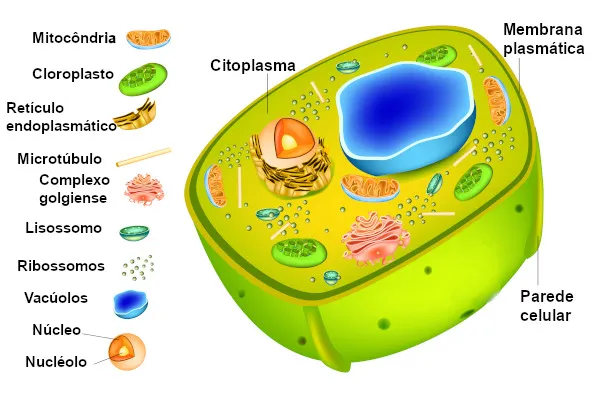

O citoplasma é uma região da célula localizada entre o núcleo e a membrana plasmática. Ele é composto por um líquido viscoso e transparente chamado de citosol, que possui uma consistência mais grudenta no contorno e mais fluida no centro.

Boa parte da produção de enzimas e atividades metabólicas da célula ocorrem no citoplasma. Ele é responsável por armazenar substâncias químicas essenciais e sustentar a estrutura celular.